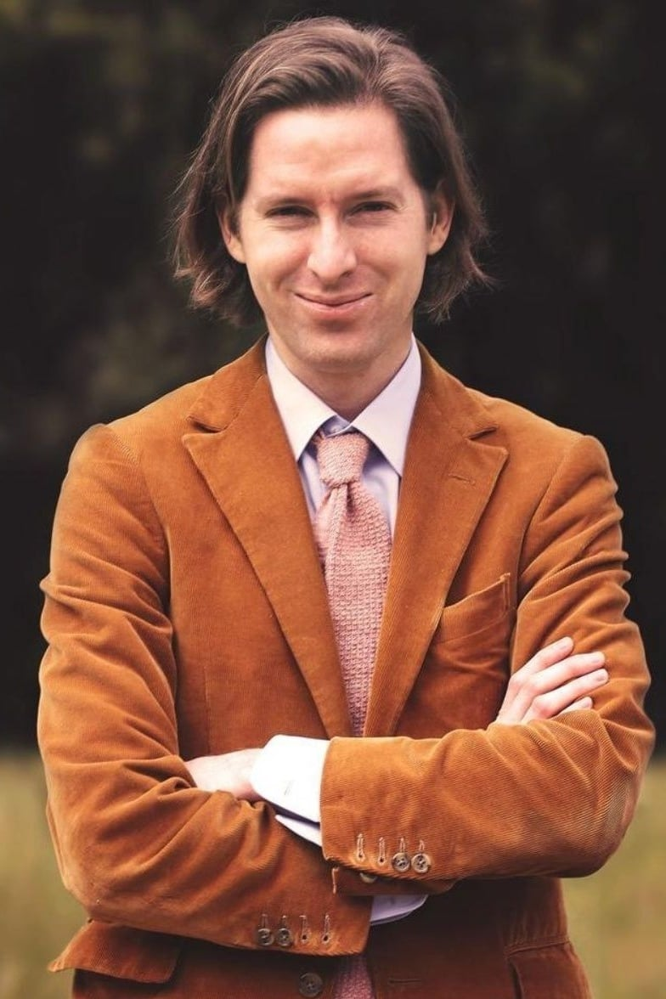

Mengenal siapa itu Wes Anderson
Anderson adalah seorang sutradara, penulis naskah, dan produser film Amerika yang terkenal dengan gaya sinematiknya yang sangat khas dan unik. Dia lahir pada 1 Mei 1969 di Houston, Texas, dan telah menjadi salah satu sutradara terkenal dalam perfilman independen. Anderson dikenal karena film-filmnya yang penuh dengan elemen-elemen seperti simetri yang kuat dalam framing, palet warna yang mencolok, penggunaan miniatur, humor khas, dan alur cerita yang melankolis. Wes Anderson diketahui mempunyai dua saudara laki-laki yang bernama Eric dan Mel,Setelah itu, ia berkuliah di University of Texas in Austin dengan mengambil jurusan filsafat.Beberapa ciri khas sinematik dari film-filmnya termasuk:
| Nama Film | Sinopsis | Tahun |
|---|---|---|
| The Grand Budapest Hotel | Film ini merupakan karya terkenal Anderson yang meraih banyak penghargaan, dengan narasi lapis tiga yang memperkenalkan penonton pada berbagai era waktu yang berbeda di sebuah hotel mewah. | 2014 |
| Isle of Dogs | Ini adalah film stop-motion Anderson yang mengisahkan tentang anjing-anjing yang diasingkan ke pulau sampah | 2018 |
| The Royal Tenenbaums | Film ini mengisahkan kisah keluarga Tenenbaum yang eksentrik dan bermasalah. Ini adalah salah satu film yang paling sering dikaitkan dengan gaya visual Anderson. | 2001 |
| Rushmore | Film ini membawa ketenaran pertama bagi Wes Anderson dan menggambarkan hubungan rumit antara seorang siswa sekolah menengah yang ambisius dan seorang miliarder yang eksentrik. | 1998 |
| The Life Aquatic with Steve Zissou | Film ini menggambarkan petualangan seorang dokumenter laut yang egosentris, dimainkan oleh Bill Murray. | 2004 |